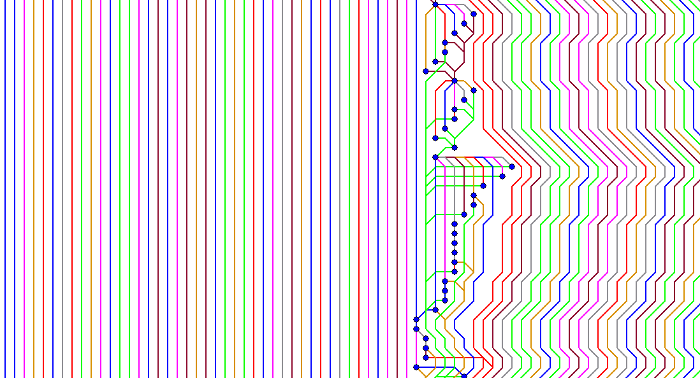
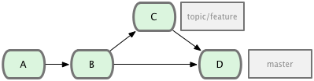
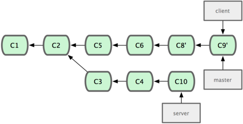
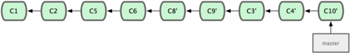

Tag 1
- Git-Session [08:45]
- Mittagessen [12:15]
- Hack-Session [13:30]
Git-Session: Ablauf
- Intro / Theorie [45m]
- Übungen 1 [45m]
- Pause [10:15, 30m]
- Übungen 2 [1h]
- Tipps & Tricks, Q & A [30m]
Co-Teacher
- Jonas Baumann
- Python Entwickler [4teamwork GmbH]
- Git seit 2008 [https://github.com/jone]
Git-Session: Themen
- History Introspection
(Fokus: Log, Diff)
- History Manipulation
(Fokus: Reset, Merge, Rebase, Cherry-Pick)
Auffrischung
Commit
- Jeder Commit hat einen eindeutigen Hash
- bestehen aus: Autor, Committer, Autor-Datum, Commit-Datum, Commit-Message, Snapshot (Tree)
- Ein Commit hat 0,1 oder mehrere Parents (Eltern)
- Merge-Commit: Commit mit mehreren Parents
Branch
- Referenz auf das neuste Commit eines Entwicklungsstrangs
- aktuell ausgecheckter Branch rückt beim Commit vorwärts
- HEAD ist eine Referenz auf den aktuell ausgecheckten Branch
Introspection & Manipulation

Git Graph I
- Netz aus zeitlich verknüpften Knoten (Commits)
- Git verstehen heisst den Graphen verstehen und verändern können
Git Graph II
- Sämtliche Operationen (commit, branch, merge, rebase, cherry-pick) sind Graph-Manipulationen
Git Graph III
- Knoten erzeugen (Commit)
- Äste erzeugen (Branch)
- Äste zusammenfügen (Merge)
- Knoten auf Äste kopieren (Cherry-Pick)
- Äste verschieben (Rebase)
Befehle
git log
- Anzeigen der Commits und deren Verknüpfung (Graph)
- Filtern von Commits
- Anzeigen der Änderungen der einzelnen Commits
- Das Tool zur Inspektion des Graphs
git diff
- Vergleichen von zwei Snapshots
- History ist nicht relevant. Es werden direkt Commits oder Files verglichen.
git cherry-pick
- Commits über mehrere Branches verwenden
- Bugfix auf mehrere Releases anwenden
- Nur einen Teil eines Branches integrieren
- Commits an einen anderen Ort verschieben
git merge
- Zwei Stränge miteinander verbinden
- Ein Merge-Commit hat mehr als 1 Parent.
- Ein Merge kann rückgänig gemacht werden, wenn man das Merge-Commit entfernt
git merge --ff-only
- Merge von einem nicht abgezweiten Branch => Fast Forward
- Fast Forward Merge => kein Merge-Commit
- Fast Forward Merge => Branch in der History nicht mehr sichtbar
git merge --no-ff topic/feature

git merge --ff-only topic/feature
Rebase
- Strang anhand einer Basis neu "ausrichten"
- Es werden neue Commits erstellt
- Folgende Informationen der Commits ändern: Parent, Committer, Committer-Datum und der Snapshot
Unterschied Merge | Rebase
Ausgangslage

Merge

Ausgangslage
Rebase

Rebase II
- Commits "verschieben"
Ausgangslage

git rebase --onto master server client

git checkout master && git merge client

git rebase master server

git checkout master && git merge server

Rebase | Merge
- NICHT rebasen mit veröffentlichten Commits
- NICHT rebasen bei grossen Branches
- Merge ist in der History sichtbar (wenn nicht FF)
- Rebase simuliert lineare History
- Rebase --onto um Commits zu verschieben
Interactive Rebase
- Reihenfolge der Commits ändern
- Commit-Message ändern
- Commits verschmelzen
- Commits entfernen
- Änderungen eines Commits bearbeiten
Übungen
Ziel der Übungen
- Git Graph verstehen und verändern können
- Git Dokumentationen kennen und interpretieren können
- Persönliche Fragen stellen und Arbeitsablauf festigen
Vorgehen
- In 2er Teams
- nicht stehenbleiben: fragen oder Aufgabe überspringen
- Bei Problemen oder persönlichen Git Fragen stehen die Coaches zur Verfügung
Teil 1
Abläufe
Fragen zum Release-Management mit Git beantworten
Review effizient durchführen
Befehle
Git Log und Diff gezielt einsetzten und verstehen
Teil 2
Abläufe
Git-Graph verstehen und gestalten
Klare und informative History erstellen
Befehle
Git Merge und Rebase gezielt einsetzten und verstehen
Coaches
- Jonas Baumann
- Yves Senn
- Leo von Wyss (DevCamp II)
Repository
- Gerrit: git clone gerrit:Garaio/DevCamps/GitWorkshop
Oder
- Github: git clone https://github.com/senny/git-workshop-example